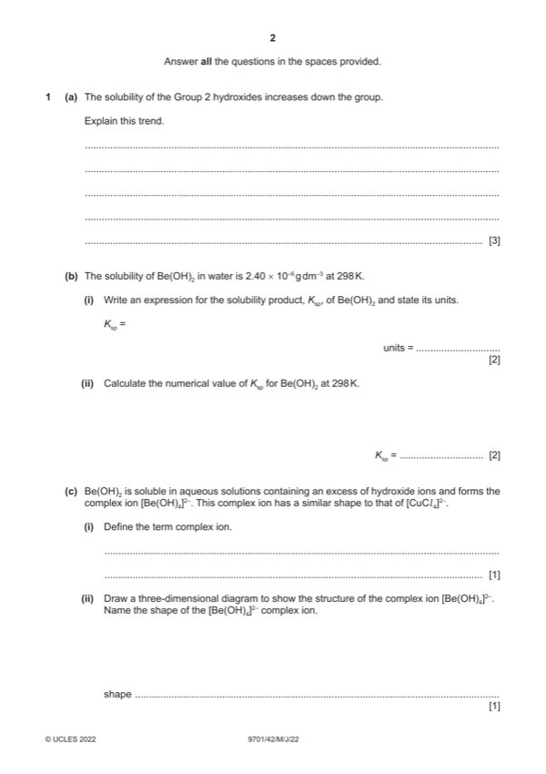

Question 1

Original paper page 2
Part 1(a) — solution
Answer: OR Hlatt changes more / dominant factor / changes faster · OR Hsol becomes less endothermic / less positive
- [M1] Hlatt and Hhyd both become less exothermic / less negative 3
- [M2] Hhyd changes less / becomes less exothermic by a smaller extent
- [M3] Hsol becomes more exothermic / more negative
Mark points
- [M1] Hlatt and Hhyd both become less exothermic / less negative 3
- [M2] Hhyd changes less / becomes less exothermic by a smaller extent
- [M3] Hsol becomes more exothermic / more negative
Part 1(b)(i) — solution
- [M1] Ksp = [Be2+][OH–]2 2
- [M2] mol3 dm–9 ecf
Mark points
- [M1] Ksp = [Be2+][OH–]2 2
- [M2] mol3 dm–9 ecf
Part 1(b)(ii) — solution
- [M1] solubility of Be(OH)2 = 2.40 10–6 / 43 = 5.58 10–8 (mol dm–3) ecf (b)(i) 2
- [M2] Ksp = 4 (5.58 10–8)3 = 6.95 10–22 ecf min 2sf
Mark points
- [M1] solubility of Be(OH)2 = 2.40 10–6 / 43 = 5.58 10–8 (mol dm–3) ecf (b)(i) 2
- [M2] Ksp = 4 (5.58 10–8)3 = 6.95 10–22 ecf min 2sf
Part 1(c)(i) — solution
as a molecule or ion formed by a central metal atom / metal ion dative bonded to / surrounded by one or more ligands 1
Mark points
- Include the ideas shown in the solution above.
Part 1(c)(ii) — solution
Answer: 1
1
tetrahedral and correct 3D structure
Mark points
- Correct result: 1
Part 1(d)(i) — solution
Answer: OR empty / vacant d orbitals AND form dative bonds / accept a lone pair from a ligand
d orbitals that are energetically accessible 1
OR empty / vacant d orbitals AND form dative bonds / accept a lone pair from a ligand
2022 Page 5 of 16
9701/42 Cambridge International AS & A Level – Mark Scheme May/June 2022
Mark points
- Correct result: OR empty / vacant d orbitals AND form dative bonds / accept a lone pair from a ligand
Part 1(d)(ii) — solution
Answer: 2
2
coordination
complex ion shape polarity
number
cis-[Pt(en)Cl2] square planar 4 polar
[Ag(NH3)2]+ linear 2 non-polar
[Fe(C2O4)3]3- octahedral 6 non-polar
three for one mark, six for two marks
Mark points
- Correct result: 2
Part 1(e)(i) — solution
the equilibrium constant for the formation of the complex ion in a solvent (from its constituent ions or molecules) 1
Mark points
- Include the ideas shown in the solution above.
Part 1(e)(ii) — solution
- [M1] Kstab = [Ni(en)32+] / [Ni(H2O)62+][en]3 2
- [M1] units = mol–3 dm9 ecf
Mark points
- [M1] Kstab = [Ni(en)32+] / [Ni(H2O)62+][en]3 2
- [M1] units = mol–3 dm9 ecf
Part 1(e)(iii) — solution
Answer: AND
the equilibria lie to the right / product side OR equilibrium 1 lies more to the right 1
AND
en complex is more stable / [Ni(en)3]2+ is more stable
Mark points
- Correct result: AND